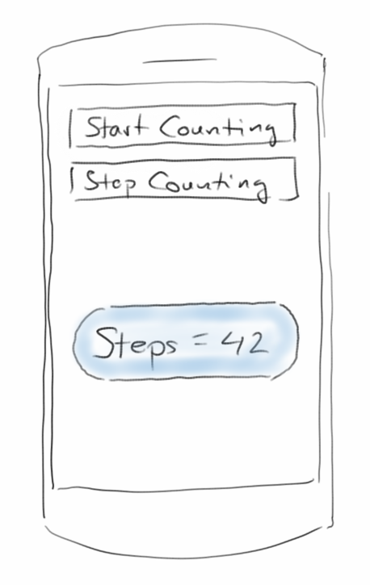
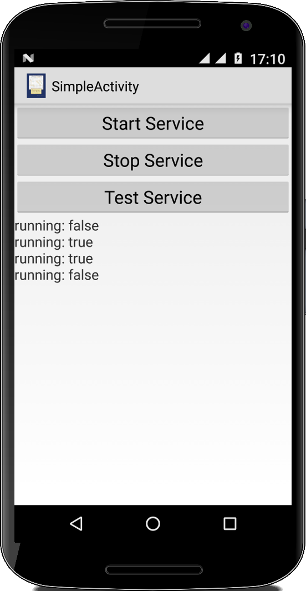
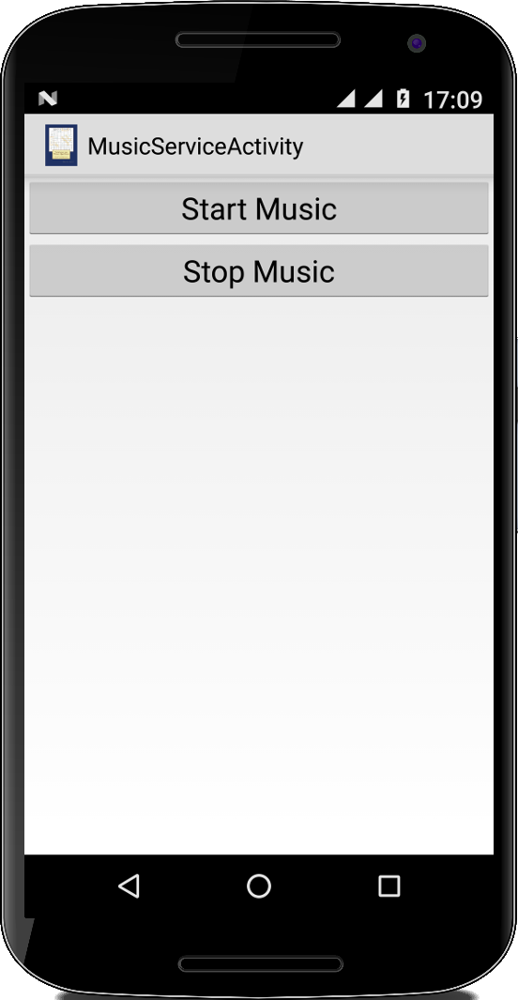
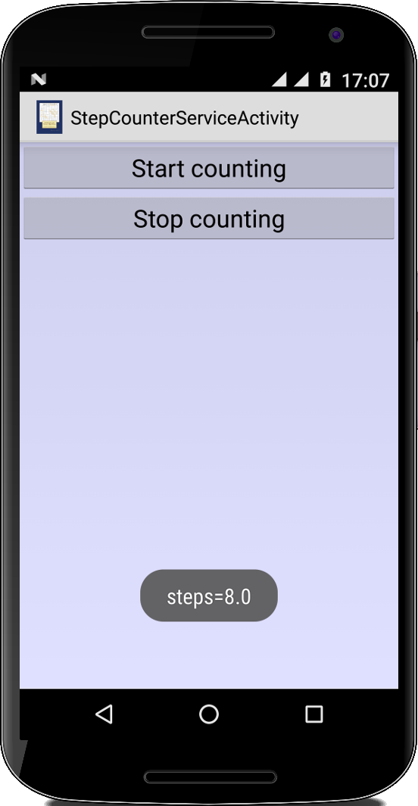
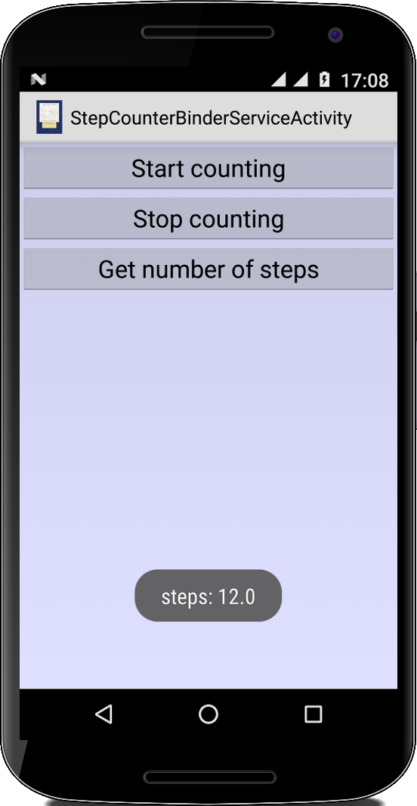
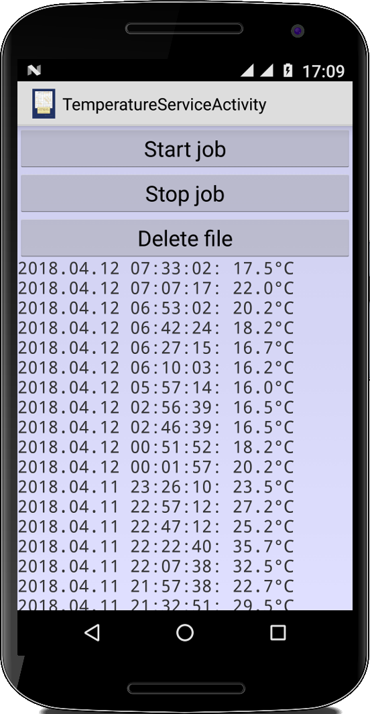
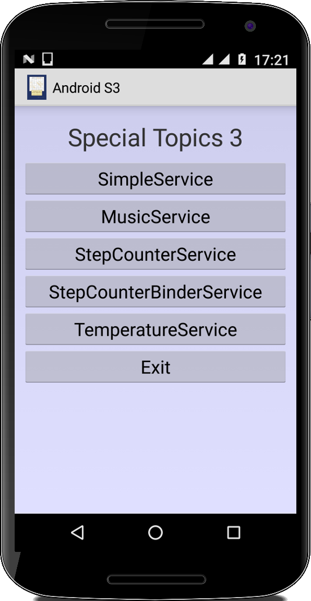
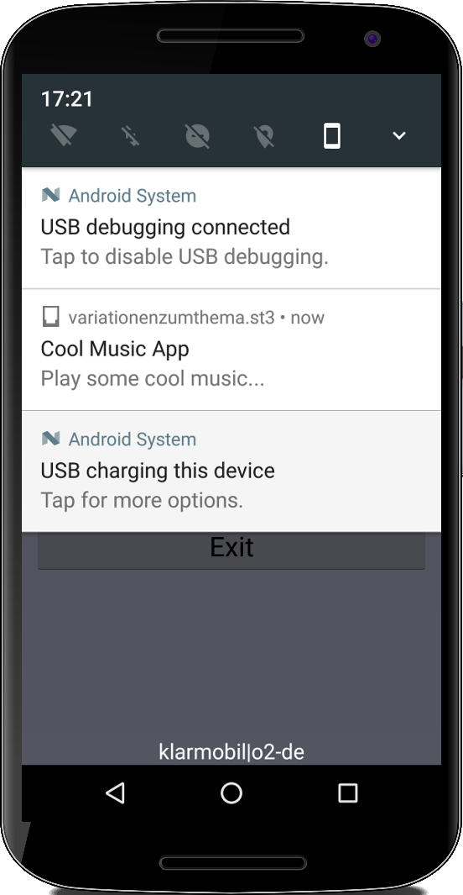

Special Topic: Services
Bisher haben wir nur Activitys kennen gelernt. Für gefühlt 99% aller Anwendungen genügen diese auch. Es gibt aber eine handvoll Anwendungen, bei denen es praktisch wäre, wenn sie im Hintergrund weiterlaufen würden. Zwei Anwendungen mit denen wir schon zu tun hatten sind der MusicPlayer und der StepCounter. Bei beiden erwarten wir eigentlich, dass sie im Hintergrund weiterlaufen, auch wenn wir eine andere Activity im Vordergrund haben. Genau für diese Fälle gibt es Services. Außerdem lernen wir noch die BroadcastReceiver kennen. Diese werden in der Regel von Systemevents getriggert, und haben ähnlich wie Services kein Userinterface.
.
SimpleService
Der einfachste Service muss lediglich die Klasse Service erweitern und die Methode onBind() implementieren:
public class SimpleService extends Service {
@Override
public IBinder onBind(Intent intent) {
return null;
}
}
Natürlich ist er so total nutzlos. Wie bei Activities haben auch Services die onCreate() und onDestroy() Methoden,
...
public void onCreate() {
Log.i("SimpleService", "onCreate()");
super.onCreate();
}
public void onDestroy() {
Log.i("SimpleService", "onDestroy()");
super.onDestroy();
}
...
die wir zum Initialisieren und Aufräumen überschreiben können. Wirklich interessant ist die onStartCommand() Methode, denn hier wird der Service gestartet:
...
public int onStartCommand(Intent intent, int flags, int startId) {
Log.i("SimpleService", "onStartCommand()");
// if we get killed, restart
// return START_STICKY;
// Don't automatically restart this Service if it is killed
return START_NOT_STICKY;
}
...
Alles was den Service ausmacht, passiert eigentlich hier (ein bisschen ähnlich wie bei der run() Methode von Threads). Interessant ist der Rückgabeparameter dieser Methode. Wenn wir den Wert START_NOT_STICKY zurückgeben, dann ist der Service damit beendet. Geben wir aber den Wert START_STICKY zurück, dann wird Android den Service immer wieder starten (meistens wenigstens), selbst wenn es ihn mal aus Platzmangel abgeschossen hat.
Im AndroidManifest müssen wir den Service noch bekannt machen, das geht über die folgenden Zeilen:
... <service android:name="variationenzumthema_st3.SimpleService" android:exported="false" /> ...
Jetzt bleibt noch die Frage, wie starten wir denn unseren Service? Eine Möglichkeit ist, das über eine Activity zu tun. Dort definieren wir einen Intent:
public class SimpleServiceActivity extends Activity {
protected void onCreate(Bundle savedInstanceState) {
...
final Intent simpleServiceIntent =
new Intent(getApplicationContext(), SimpleService.class);
...
startService(simpleServiceIntent);
...
stopService(simpleServiceIntent);
...
}
...
}
über den wir dann mittels startService() den Service starten und mittels stopService() beenden.
Wie wissen wir ob ein Service schon läuft? Das geht entweder auf dem Gerät über die Einstellungen -> Developer options -> Running services, oder mit der folgenden Methode:
private boolean isServiceRunning(Class<?> serviceClass) {
ActivityManager manager = (ActivityManager) getSystemService(Context.ACTIVITY_SERVICE);
for (RunningServiceInfo service : manager.getRunningServices(Integer.MAX_VALUE)) {
if (serviceClass.getName().equals(service.service.getClassName())) {
return true;
}
}
return false;
}
.
MusicService
Als erste nützliche Anwendung für einen Service wollen wir einen MusicService implementieren, der die Musik weiterspielt, auch wenn unsere MusicServiceActivity nicht mehr im Vordergrund ist.
Dazu definieren wir die Instanzvariable player vom Typ MediaPlayer und implementieren die onStartCommand() und onDestroy() Methoden:
public int onStartCommand(Intent intent, int flags, int startId) {
if (player == null) {
player = MediaPlayer.create(this, R.raw.trap_beat);
player.start();
} else {
if (player.isPlaying()) {
player.seekTo(0);
} else {
player.start();
}
}
return START_NOT_STICKY;
}
public void onDestroy() {
if (player != null) {
player.stop();
player.release();
}
super.onDestroy();
}
Gestartet wird der Service über die MusicServiceActivity, die identisch zur SimpleServiceActivity ist.
.
StepCounterService
Damit der StepCounter-Sensor Schritte zählt, muss immer ein Listener definiert sein. Wenn wir dafür eine Activity verwenden, dann werden nur so lange Schritte gezählt wie diese Activity im Vordergrund ist. Öffnen wir aber eine andere Activity oder ist unser Gerät ausgeschaltet, dann werden keine Schritte gezählt, was natürlich nicht besonders nützlich ist. Deswegen wollen wir in dieser Anwendung einen Service die Schritt zählen lassen.
Dazu mischen wir unseren Code aus der StepCounterActivity aus Kapitel sechs mit dem SimpleService oben:
public class StepCounterService
extends Service
implements SensorEventListener {
...
}
Da die Service Klasse keine onResume() und onPause() Methode hat, schieben wir den Code zum Registrieren des StepCounter Sensors in die onStartCommand() Methode und zum Deregistrieren in die onDestroy() Methode.
Ein User Interface hat ein Service natürlich keines, deswegen lassen wir alles was mit dem TextView zu tun hat weg. Interessanterweise können Services aber toasten, d.h. immer wenn die onSensorChanged() Methode aufgerufen wird, also ein Schritt erkannt wurde, zeigen wir die Anzahl der Schritte in einem Toast an:
public final void onSensorChanged(SensorEvent event) {
float steps = event.values[0];
Toast.makeText(this, "steps=" + steps, Toast.LENGTH_SHORT).show();
}
Zum Starten unseres Services benötigen wir wieder eine StepCounterServiceActivity, die identisch zur SimpleServiceActivity ist.
.
StepCounterBinderService
Wenn uns das stört, dass wir alle paar Schritte "getoastet" werden, dann müssen wir irgendwie auf den Service und seine Daten zugreifen können, damit wir die dann in einer Activity anzeigen können. Dazu müssen wir den Service an die Activity "binden".
Als Erstes schreiben wir eine Klasse namens StepBinder vom Typ Binder,
public class StepCounterBinderService extends Service ... {
private final IBinder mBinder = new StepBinder();
public class StepBinder extends Binder {
StepCounterBinderService getService() {
return StepCounterBinderService.this;
}
}
...
}
die die Methode getService() enthält, welche uns einfach eine Referenz auf eine Instanz unseres Services gibt. In der onBind() Methode, die wir jetzt das erste Mal verwenden, geben wir einfach eine Referenz auf den Binder zurück:
public IBinder onBind(Intent intent) {
return mBinder;
}
Damit haben wir also einen Referenz auf unseren Service, und können auf all seine public Methoden zugreifen. Deswegen wenn wir noch eine Methode namens
public float getNumberOfSteps() {
return steps;
}
haben, können wir aus unsere Activity auf die Schritte zugreifen.
Kommen wir zur Activity: Hier müssen wir uns mit Hilfe der Methode bindService() mit dem Service verbinden,
protected void onStart() {
super.onStart();
Intent intent = new Intent(this, StepCounterBinderService.class);
bindService(intent, mConnection, Context.BIND_AUTO_CREATE);
}
protected void onStop() {
super.onStop();
unbindService(mConnection);
}
und natürlich später die Verbindung auch wieder mit unbindService() aufheben. Um jetzt über den Binder an den Service ranzukommen, benötigen wir noch die mConnection, eine ServiceConnection die wir in der onCreate() definieren:
private StepCounterBinderService mService; private ServiceConnection mConnection; public void onCreate(Bundle savedInstanceState) { ... mConnection = new ServiceConnection() { @Override public void onServiceConnected(ComponentName className, IBinder service) { StepBinder binder = (StepBinder) service; mService = binder.getService(); } @Override public void onServiceDisconnected(ComponentName arg0) { // do nothing } }; ... }
Jetzt haben wir mit mService eine Referenz auf den Service und können dort alle Methoden aufrufen die public sind, z.B. die getNumberOfSteps() Methode.
Wenn wir Daten von der Activity an den Service übergeben wollen, dann geht das am besten beim Starten des Services: der Service wird ja über einen Intent gestartet, und dem Intent können wir ja Extras mitgeben, wie wir bereits im ersten Kapitel gesehen haben.
Offensichtlich ist das Ganze nicht ganz trivial, deswegen sollte man sich zweimal überlegen ob die direkte Kommunikation zwischen Activty und Service wirklich nötig ist. Im nächsten Beispiel sehen wir nämlich, dass es auch einfacher geht.
.
TemperatureService
Wenn wir z.B. die Temperatur in einem Raum kontinuierlich überwachen wollen, dann bietet es sich an einen Service dafür zu verwenden. Da wir aber die Temperatur nicht im Sekundentakt benötigen, sondern nur ein paar Mal pro Stunde, eignet sich ein JobService dafür am besten. Wie wir Temperaturen mit der Batterie messen können haben wir ja im Sensor Kapitel bereits gesehen.
Ein JobService hat eine onStartJob() und eine onStopJob() Methode,
public class TemperatureService extends JobService {
public boolean onStartJob(JobParameters params) {
...
return true;
}
@Override
public boolean onStopJob(JobParameters params) {
...
return false;
}
}
die genau das machen was man von ihnen erwartet.
Gestartet wird der JobService in der Regel aus einer Activity. Dazu sagen wir ihm welche JobService-Klasse gestartet werden soll, und in welchem REFRESH_INTERVAL der Service aufgerufen werden soll:
public class TemperatureServiceActivity extends Activity {
private final int JOB_ID = 42;
private final int REFRESH_INTERVAL = 15 * 60 * 1000;
private JobScheduler mJobScheduler;
public void onCreate(Bundle savedInstanceState) {
...
mJobScheduler = (JobScheduler) getSystemService(Context.JOB_SCHEDULER_SERVICE);
...
ComponentName componentName = new ComponentName(getApplicationContext(), TemperatureService.class);
JobInfo.Builder jobBuilder = new JobInfo.Builder(JOB_ID, componentName);
jobBuilder.setPeriodic(REFRESH_INTERVAL);
// jobBuilder.setExtras(bundle).build();
JobInfo jobInfo = jobBuilder.build();
if (mJobScheduler.schedule(jobInfo) == JobScheduler.RESULT_SUCCESS) {
Log.i("", "Success");
} else {
Log.i("", "Failure");
}
...
mJobScheduler.cancelAll();
...
}
}
Bei neureren Android Systemen kann man nur Intervalle von mindestens 15 Minuten verwenden. Wie wir im Screenshot sehen können, scheint der JobService aber sogar damit Probleme zu haben, wenigstens nachtsüber.
Fast hätte ich es vergessen, in der AndroidManifest Datei müssen wir noch um Erlaubnis fragen, ob wir einen Job schedulen dürfen:
<service android:name="variationenzumthema_st3.TemperatureService" android:permission="android.permission.BIND_JOB_SERVICE" />
.
SimpleReceiver
Eine andere Möglichkeit Services zu starten ist mittels eines BroadcastReceiver. BroadcastReceiver sind relativ unscheinbar und einfach zu programmieren. Man muss lediglich die Methode onReceive() überschreiben:
public class SimpleReceiver extends BroadcastReceiver {
@Override
public void onReceive(Context context, Intent intent) {
Vibrator v = (Vibrator) context.getSystemService(Context.VIBRATOR_SERVICE);
v.vibrate(500);
Toast.makeText(context, "Hi from SimpleReceiver!", Toast.LENGTH_SHORT).show();
}
}
Gestartet werden BroadcastReceiver durch Systemevents, die man in der AndroidManifest Datei festlegt:
<receiver
android:name="variationenzumthema_st3.SimpleReceiver"
android:enabled="true"
android:exported="true" >
<intent-filter>
<action android:name="android.intent.action.ACTION_POWER_CONNECTED" />
</intent-filter>
</receiver>
Wenn man die Liste der möglichen Systemevents durchgeht, und man auch nur das kleinste Fünkchen Überwachungsphobie hat, wird einem ganz anders. Z.B. gibt es da:
ACTION_POWER_CONNECTED ACTION_SHUTDOWN BATTERY_LOW BOOT_COMPLETED DATA_SMS_RECEIVED DOCK_EVENT DREAMING_STARTED HEADSET_PLUG MEDIA_MOUNTED NEW_OUTGOING_CALL PACKAGE_INSTALL SCREEN_OFF USER_PRESENT ...
Da man als Enduser weder merkt, dass ein Receiver läuft, noch bei der Installation darauf hingewiesen wird, hat man noch einen weiteren Grund an manche Verschwörungstheorie zu glauben.
Eine Sache noch: natürlich ist es ganz wichtig, dass der Nutzer einem explizit erlaubt, dass man den Vibrator verwenden darf:
<uses-permission android:name="android.permission.VIBRATE" />
Eigentlich lächerlich.
Wenn Sie jemanden zum Wahnsinn treiben wollen, dann starten Sie aus einem Service heraus (der von einem Receiver gestartet wird) zu zufälligen Zeiten den Vibrator. Bis die Leute rausfinden wo das Vibrieren herkommt, sind die längst in der Klapse.
.
MusicReceiver
Um mal zu sehen, wie man von einem Receiver heraus einen Service starten kann, sehen wir uns kurz das folgende Beispiel an:
public class MusicReceiver extends BroadcastReceiver {
@Override
public void onReceive(Context context, Intent intent) {
Intent musicServiceIntent = new Intent(context, MusicService.class);
context.startService(musicServiceIntent);
}
}
In dem Fall starten wir unseren MusicService von oben. Natürlich müssen wir den Receiver wieder in der AndroidManifest Datei mit einem Systemevent verbinden. Hypothetisch könnte die Musik jetzt in einer Endlosschleife laufen (player.setLooping(true)), und der Nutzer wird die Musik nur durch Deinstallieren der App wieder los (oder über die Developer Optionen den Service abschießen).
.
NotificationReceiver
Der MusicReceiver oben war ein Beispiel wie man es nicht machen sollte. Denn eigentlich sollte unser Nutzer immer die Möglichkeit haben, einen Service zu beenden. Dazu müsste er aber wissen, dass ein Service läuft. Das macht man am besten über Notifications. Notifications sind kleine Icons, die in der Statuszeile angezeigt werden, über die der Nutzer mit unserer Anwendung interagieren kann.
Wir beginnen wieder mit dem Receiver,
public class NotificationReceiver extends BroadcastReceiver {
@Override
public void onReceive(Context context, Intent intent) {
Intent musicServiceIntent =
new Intent(context, NotificationService.class);
context.startService(musicServiceIntent);
}
}
Der Receiver started den NotificationService, der vom Code her identisch mit unserem MusicService oben ist, der einzige Unterschied sind die folgenden Zeilen:
public class NotificationService extends Service {
private final int NOTIFICATION_ID = 42;
...
@Override
public void onCreate() {
...
Intent notificationIntent = new Intent(this, NotificationActivity.class);
PendingIntent pendingIntent = PendingIntent.getActivity(this, 0, notificationIntent, 0);
Notification notification =
new Notification.Builder(this)
.setSmallIcon(R.drawable.notification_icon)
.setContentTitle("Cool Music App")
.setContentText("Play some cool music...")
.setContentIntent(pendingIntent)
.build();
startForeground(NOTIFICATION_ID, notification);
}
...
}
.
Wir basteln hier also eine Notification, versehen sie mit einem eigenen Icon (kann nur transparent-weiß sein), einem Titel und Text, sowie einem Intent, der gestartet werden soll, wenn der Nutzer auf die Notification klickt. In unserem Fall ist das die NotificationActivity:
public class NotificationActivity extends Activity {
@Override
public void onCreate(Bundle savedInstanceState) {
super.onCreate(savedInstanceState);
final Intent notificationServiceIntent =
new Intent(getApplicationContext(), NotificationService.class);
LinearLayout ll = new LinearLayout(this);
ll.setBackgroundColor(0x200000ff);
ll.setOrientation(LinearLayout.VERTICAL);
Button btn = new Button(this);
btn.setText("End NotificationService");
btn.setOnClickListener(new OnClickListener() {
@Override
public void onClick(View v) {
stopService(notificationServiceIntent);
Toast.makeText(v.getContext(), "NotificationService stopped", Toast.LENGTH_LONG).show();
}
});
ll.addView(btn);
setContentView(ll);
}
}
Diese Activity sollte mindestens dem Nutzer erlauben, den Service zu beenden. Dann ist alles gut.
.
PhoneCallReceiver
Zum Abschluß noch ein kleines Schmankerl: auf Stack Overflow habe ich den AbstractPhoneCallReceiver gefunden. Das ist ein klassischer BroadcastReceiver so wie wir sie gerade verwendet haben. Interessant ist, dass er auf das Telefon hört, deswegen braucht er auch zwei Permissions,
<uses-permission android:name="android.permission.READ_PHONE_STATE" /> <uses-permission android:name="android.permission.PROCESS_OUTGOING_CALLS" />
die eine für eingehende und die andere für ausgehende Telefonate. Das schöne an derm AbstractPhoneCallReceiver ist, dass er uns die Schmutzarbeit abnimmt, und wir müssen lediglich die Methoden überschreiben, die uns interessieren, als da sind:
public class PhoneCallReceiver extends AbstractPhoneCallReceiver {
@Override
protected void onIncomingCallStarted(Context context, String number, Date start) {
Toast.makeText(context, "onIncomingCallStarted(): "+number, Toast.LENGTH_LONG).show();
//recordAudio();
}
@Override
protected void onOutgoingCallStarted(Context context, String number, Date start) {
Toast.makeText(context, "onOutgoingCallStarted(): "+number, Toast.LENGTH_LONG).show();
}
@Override
protected void onIncomingCallEnded(Context context, String number, Date start, Date end) {
Toast.makeText(context, "onIncomingCallEnded(): "+number, Toast.LENGTH_LONG).show();
//playAudio();
}
@Override
protected void onOutgoingCallEnded(Context context, String number, Date start, Date end) {
Toast.makeText(context, "onOutgoingCallEnded(): "+number, Toast.LENGTH_LONG).show();
}
@Override
protected void onMissedCall(Context context, String number, Date start) {
Toast.makeText(context, "onMissedCall(): "+number, Toast.LENGTH_LONG).show();
}
}
Wenn wir also jetzt beim Telefonieren zuhören wollen, müssen wir mit der Audioaufnahme in der onIncomingCallStarted() Methode beginnen und in der onIncomingCallEnded() Methode wieder aufhören. Wie das mit der Audioaufnahme funktioniert haben wir ja im Multimedia Kapitel besprochen.
.
WhoStoleMyPhoneService
Die Idee hinter WhoStoleMyPhoneService ist ganz einfach: wir wollen ein Bild mit der Selfie-Kamera machen, wenn immer eine der folgenden Aktionen passiert:
ACTION_SCREEN_ON, ACTION_SCREEN_OFF oder ACTION_USER_PRESENT.
Dazu schreiben wir einen Service der in der onStartCommand() Methode einen BroadcastReceiver registriert, der auf diese Aktionen hört:
public class WhoStoleMyPhoneService extends Service {
private BroadcastReceiver mReceiver;
@Override
public int onStartCommand(Intent intent, int flags, int startId) {
IntentFilter intentFilter = new IntentFilter(Intent.ACTION_SCREEN_ON);
intentFilter.addAction(Intent.ACTION_SCREEN_OFF);
intentFilter.addAction(Intent.ACTION_USER_PRESENT);
mReceiver = new WhoStoleMyPhoneReceiver();
registerReceiver(mReceiver, intentFilter);
return START_STICKY;
}
...
Der BroadcastReceiver ist eine lokale Klasse, die in der onReceive() Methode einfach ein Bildchen macht:
...
private class WhoStoleMyPhoneReceiver extends BroadcastReceiver {
private Camera camera;
private SurfaceTexture surfaceTexture;
@Override
public void onReceive(Context context, Intent intent) {
if (intent.getAction().equals(Intent.ACTION_USER_PRESENT)) {
surfaceTexture = new SurfaceTexture(42);
takePicture();
Toast.makeText(context, "Smile!", Toast.LENGTH_SHORT).show();
}
}
...
}
}
Idealerweise wird das Bildchen nicht lokal, sondern im Internet gespeichert, sonst hat das Ganze ja wenig Sinn. Und natürlich muss der Service noch irgendwie gestartet werden.
.
Fragen
-
Geben Sie ein Beispiel wofür man typischerweise die Service Klasse und wofür die BroadcastReceiver Klasse verwenden könnte.
-
In diesem Kapitel haben Sie von den sogenannten BroadcastReceivern gehört. Wofür sind diese nützlich, geben Sie vielleicht ein Beispiel.
-
In Android gibt es vier Arten von Applikationen:
o Activity
o Service
o BroadcastReceiver
o ContentProvider
Beschreiben Sie jede kurz und geben Sie je ein Beispiel.
- Was müssen Sie tun, damit ihre Programm startet wenn der Systemevent "ACTION_POWER_CONNECTED" ausgelöst wird.
.